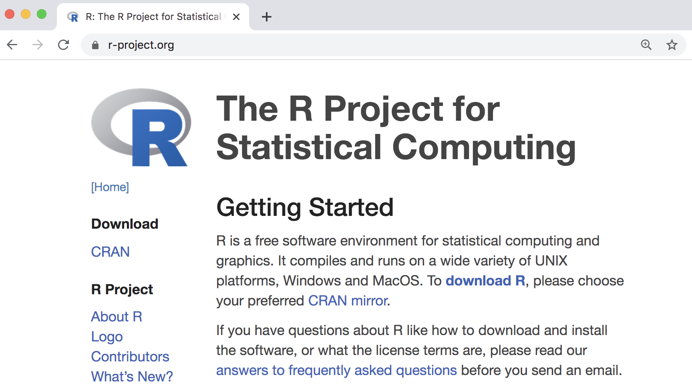
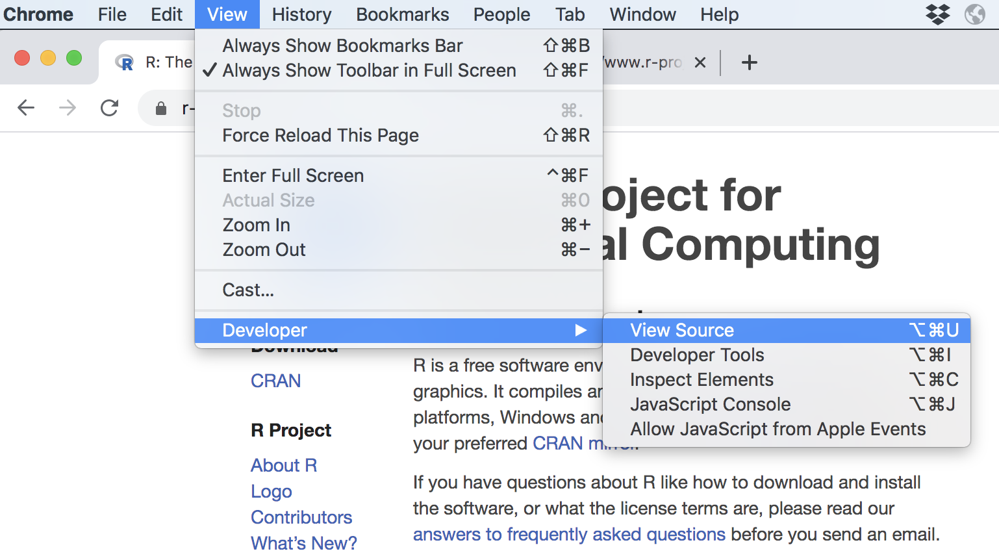
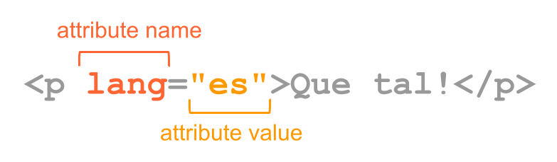

7 Basics of HTML
The goal of this chapter is to give you a crash introduction to HTML, so you can get a good grasp of this format before moving to the next chapter.
7.1 A quick introduction to HTML
HTML is not a programming language; it is simply a markup language, which means it is a syntax for identifying and describing the elements of a document such as headings, paragraphs, lists, tables, images, hyperlinks, etc. Technically, HTML is an XML dialect.
Say we visit R’s official website (screencapture below).
The visually rich and interactive pages we see on the Web are based on plain text files referred to as source files. To look at the actual HTML content behind R’s homepage, you need to get access to the source code option in your browser. If you are using Chrome, go to the View tab in the menu bar, then choose the Developer option, and finally click on View Source.

If we take a look at the source file behind R’s homepage, we’ll discover the actual HTML content, depicted in the image below.

As you can tell, the webpage is cleverly rendered by your browser that knows exactly how to take care of the content in the source file. If you are not familiar with HTML, some (if not most) of the text will look like gibberish to you right now. But it all has a specific structure and meaning.
What you see on the browser is the result of the resources served by the server where R’s website is stored. Technically speaking, the resources should include an index.htmlfile, plus other files (stylesheet files, and image files)

In particular, the following resources (different types of files) can be identified:
index.htmlfavicon-33x32.pngfavicon-16x16.pngbootstrap.min.cssR.cssRlogo.png
7.1.1 HTML document structure
Let’s study the structure of a basic HTML document. Below is a diagram with a simplified content of R’s webpage.

The first line of text is the document type declaration, which identifies this document as an HTML5 document. Then we have the html element which is the root element of the document, and it contains all the other elements.
Within the html element, we find two elements: the head and the body. The head element contains descriptive information such as the title, style sheets, scripts, and other meta information. The mandatory element inside the head is the title.
The body element contains everything that is displayed in the browser.
7.1.2 HTML Syntax
You don’t need to memorize all possible HTML elements (or tags), but it’s important that you learn about their syntax and structure. So let’s describe the anatomy of html elements.
Here’s an example with a <p> element which is the paragraph element. An HTML tag has an opening tag consisting of the tag name surrounded by angle brackets, that is, the <p> characters.
Usually, you put tags around some content text. At the end of the tag there is the closing tag, in this case </p>. You know it’s a closing tag because it comes after the content, and it has a slash / before the p name. All closing tags have a slash in them.

Not all tags come in the form of a pair of matching tags (an opening and a closing tag). There are some tags that don’t have a closing tag. Perhaps the most common tag of this type is the <img> tag used for images. One example is the <img> tag for the R logo file in the homepage of R project:
<img src="/Rlogo.png"/>As you can tell, the <img> tag does not have a closing tag; you can say that itself closes with a slash and the right angle bracket />.
Some elements have attributes which allows you to specify additional information about an element. Attributes are declared inside the opening tag using special keywords. We assign values to attributes with the equals sign, and we specify the values inside quotations.

In the example above, a paragraph tag contains an attribute lang for language with a value of es for español or spanish.
Notice also that the previous <img> element has an attribute src to indicate the source filename of the picture, in this case, "/Rlogo.png".
7.1.3 What the browser does
The browser (e.g. Chrome, Safari, Firefox) reads the HTML, interprets all the tags, and renders the content accordingly. Recall that tags tell browser about the structure and meaning of the text. The browser identifies what parts are headings (e.g. <h1>, <h2>), what parts are paragraphs (e.g. <p>), what parts are lists (e.g. <ol>, <ul>), what text needs to be emphasized, and so on.
The HTML syntax tells the browser about the structure of a document: where the headings are, where the paragraphs are, what text is part of a list, and so on. How do browsers know this? Well, they have built-in default rules for how to render HTML elements. In addition to the default settings, HTML elements can be formatted in endless ways using what is called Cascade Style Sheets or CSS for short, that determine font types, colors, sizes, and many other visual aspects of a page.
7.1.4 Web Scraping
Many websites are secured by an SSL/TSL certificate, which you can identify by looking at the URL containing https (Hyper Text Transfer Protocol Secure). SSL stands for Secure Sockets Layer. This is a technology that keeps an internet connection secure and safeguards sensitive data that is being sent between a client and a server (for example, when you use your browser to shop in amazon) or server to server (for example, an application with payroll information). The SSL technology is currently deprecated and has been replaced entirely by TLS which stands for Transport Layer Security. Simply put, TSL also ensures data privacy the same way that SSL does. Since SSL is actually no longer used, this is the correct term that people should start using.
HTTPS is a secure extension of HTTP. When a website uses HTTPS it means that the website is secured by an SSL/TLS certificate. Consequently, websites that install and configure an SSL/TLS certificate can use the HTTPS protocol to establish a secure connection with the server. Quote: “The details of the certificate, including the issuing authority and the corporate name of the website owner, can be viewed by clicking on the lock symbol on the browser bar.”
Wikipedia uses HTTPS. For instance, if we visit the entry for men’s long jump world record progression, the url is
https://en.wikipedia.org/wiki/Men%27s_long_jump_world_record_progression
If we try to use functions like readHTMLTable from "XML" package, it will fail
wiki <- 'https://en.wikipedia.org/wiki/Men%27s_long_jump_world_record_progression'
# this fails
tbls <- readHTMLTable(wiki)One option to read the html tables and extract them as R data frames, is to first download the html file to your computer, and then use readHTMLTable() to scrape the tables:
# desired url
wiki <- 'https://en.wikipedia.org/wiki/Men%27s_long_jump_world_record_progression'
# destination file
jump_html <- 'men-long-jump-records.html'
# download file to your working directory
download.file(wiki, jump_html)
tbls <- readHTMLTable(jump_html)We recommend using this option when:
- the data fits in your computer, in this way you also have the raw data
- you need to experiment and get to know the content, in order to decide which elements you will extract, which functions to use, what kind of processing operations or transformations you need to apply, etc.
- also, downloading an HTML document save you from making innecessary requests that could get in trouble, and potentially be blocked by a server because you are overloading them with multiple requests.